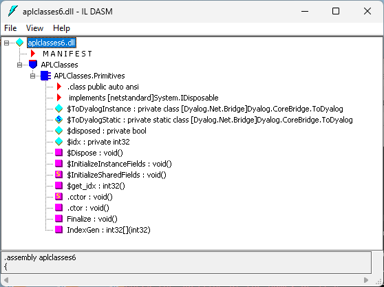
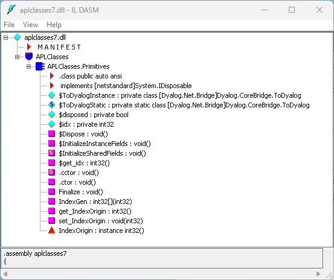

Creating .NET Classes with APL Source Files
New .NET classes can be defined and used within an APL Source file. This section provides a brief introduction to writing classes, aimed specifically at APL Source files – see the Dyalog APL Programming Reference Guide for more information on writing classes in Dyalog.
A class is defined by :Class and :EndClass statements:
:Class Name: Typedeclares a new class calledName, which is based on the base classType, which can be any valid .NET class.:EndClassterminates a class definition block.
The methods provided by the class are defined as function bodies enclosed within these statements. You can also define sub-classes or nested classes using nested :Class and :EndClass statements.
A class specified in this way will automatically support the methods, properties and events that it inherits from its base class, together with any new public methods that are specified. However, the new class only inherits a default constructor (which is called with no parameters) and does not inherit all of the other private constructors from its base class. You can define a method to be a constructor using the :Implements Constructor declarative comment. Constructor overloading is supported, and you can define any number of different constructor functions in this way, but they must have unique parameter sets for the system to distinguish between them.
You can create and use instances of a class by using the ⎕NEW system function in statements elsewhere in the APL Source file.
Example: Creating A .NET Class Using an APL Source File
The following code illustrates how you can create a .NET Class using an APL Source file. The example class is the same as in Example 1. The APL Source file [DYALOG]/Samples/aplclasses/aplclasses6/aplclasses6.apln is:
:Namespace APLClasses
:Class Primitives: Object
⎕USING←,⊂'System'
:Access public
∇ R←IndexGen N
:Access Public
:Signature Int32[]←IndexGen Int32 number
R←⍳N
∇
:EndClass
:EndNamespaceThis APL Source file code defines a namespace called APLClasses. This namespace acts as a container and is there to establish a .NET namespace of the same name within the resulting .NET assembly. Within APLClasses is a .NET class called Primitives whose base class is System.Object. This class has a single public method named IndexGen, which takes a parameter called number whose data type is Int32, and returns an array of Int32 as its result.
The following command shows how aplclasses6.apln is compiled to a .NET assembly using the /t:library flag.
aplclasses6> dyalogc.exe /t:library aplclasses6.apln
Dyalog .NET Compiler 64 bit. Unicode Mode. Version 19.0.48666.0
Copyright Dyalog Ltd 2000-2024
aplclasses6>Dyalog on Microsoft Windows
The image below shows a view of the resulting aplclasses6.dll using ILDASM.

As with other .NET classes, this .NET class can be called from APL. For example:
)CLEAR
clear ws
⎕USING←'APLClasses,[DYALOG]/Samples/aplclasses/aplclasses6/net/aplclasses6.dll'
APL←⎕NEW Primitives
APL.IndexGen 10
1 2 3 4 5 6 7 8 9 10Defining Properties
Properties are defined within :Property and :EndProperty statements. A property pertains to the class in which it is defined.
Within a :Property block, you must define the accessors of the property. The accessors specify the code that is associated with referencing and assigning the value of the property. No other function definitions or statements are allowed inside a :Property block.
The accessor used to reference the value of the property is represented by a function called get that is defined within the :Property block. The accessor used to assign a value to the property is represented by a function called set that is defined within the :Property block.
The get function is used to retrieve the value of the property and must be a niladic result returning function. The data type of its result determines the Type of the property. The set function is used to change the value of the property and must be a monadic function with no result. The argument to the function will have a data type Type specified by the :Signature statement. A property that contains a get function but no set function is effectively a read-only property.
Example
:Property Name
∇ C←get
[1] :Access public
[2] :Signature Double←get
[3] C←...
∇
:EndPropertyThis declares a new property called Name whose data type is System.Double. When defining a property, the data type can be any valid .NET type that can be located through ⎕USING.
The APL Source file [DYALOG]/Samples/aplclasses/aplclasses7/aplclasses7.apln shows how a property called IndexOrigin can be added to this example. Within the :Property block there are two functions called get and set; these functions use the previously‑described fixed names and syntax, and are used to reference and assign a new value respectively:
:Namespace APLClasses
:Class Primitives: Object
⎕USING←,⊂'System'
:Access public
∇ R←IndexGen N
:Access Public
:Signature Int32[]←IndexGen Int32 number
R←⍳N
∇
:Property IndexOrigin
∇io←get
:Signature Int32←get Int32 number
io←⎕IO
∇
∇set io
:Signature set Int32 number
:If io∊0 1
⎕IO←io
:EndIf
∇
:EndProperty
:EndClass
:EndNamespaceDyalog on Microsoft Windows
The ILDASM view of the new aplclasses7.dll, showing the new IndexOrigin property, is shown below.

As with other .NET classes, this .NET class can be called from APL. For example:
)CLEAR
clear ws
⎕USING←'APLClasses,[DYALOG]/Samples/aplclasses/aplclasses7/net/aplclasses7.dll'
APL←⎕NEW Primitives
APL.IndexGen 10
1 2 3 4 5 6 7 8 9 10
APL.IndexOrigin
1
APL.IndexOrigin←0
APL.IndexGen 10
0 1 2 3 4 5 6 7 8 9Indexers
An indexer is a property of a class that enables an instance of that class (an object) to be indexed in the same way as an array, if the host language supports this feature. Languages that support object indexing include C#. Dyalog also allows indexing to be used on objects. This means that you can define an APL class that exports an indexer, and you can use the indexer from C# or Dyalog.
Indexers are defined in the same way as properties, that is, between :Property Default and :EndProperty statements. There can only be one indexer defined for a class.
Information
The :Property Default statement in Dyalog is closely modelled on the indexer feature in C# and employs similar syntax.
Dyalog on Microsoft Windows
If you use ILDASM to browse a .NET class containing an indexer, you will see the indexer as the default property of that class, which is how it is implemented.